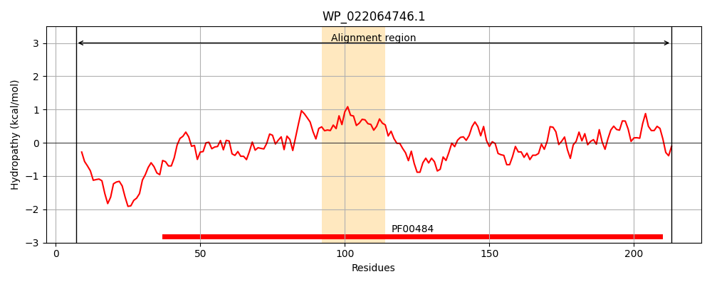
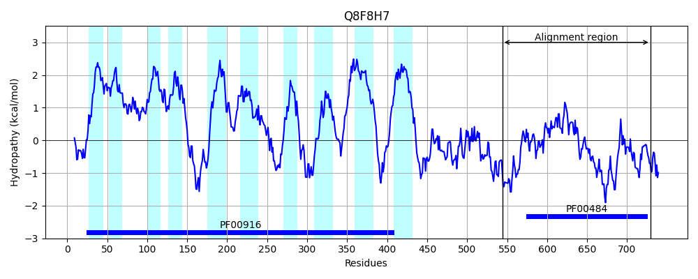
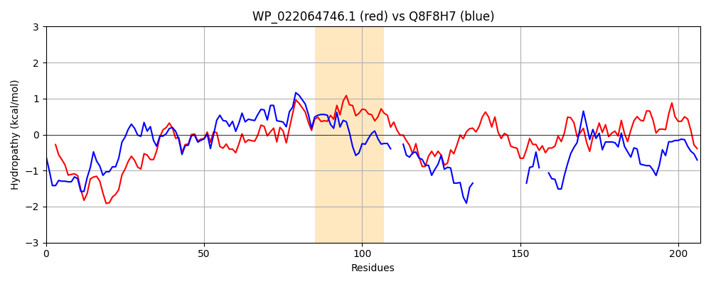

Hit Accession: Q8F8H7
Hit TCID: 2.A.53.3.8
Hit Description: gnl|BL_ORD_ID|16157 gnl|TC-DB|Q8F8H7|2.A.53.3.8 Carbonic anhydrase (EC 4.2.1.1) - Leptospira interrogans.
Mach Len: 207
e:0.000000
Query TMS Count : 1
Hit TMS Count: 10
TMS-Overlap Score: 0.000000
Predicted Substrates:CHEBI:5589;hydrogencarbonate, CHEBI:9335;sulfate
BLAST Alignment:
Score: 348 , Bit scores: 138 bits, E-value: 9.5e-38, Alignment length: 207, Percentage identity: 41
Query: 7 LLARNRSWALQKCQHDPDYFEKWVDGQRPHSLWIGCSDSRVPAEVLTGSQPGELFVHRNIANMLDPADDNVMSVLQYALHYLEVERVVLCGHYGCGGVQAALSLPTLPLAQESSALARRIGQLRHTLHHEMAQIADDCCVAASPGAGASTDAEPSRHALDALVEANVRAQFARLLESEPVQTVLASGRPLSLHGCVYDLASGHLTTL 213
L NR W +K DPDYF+ GQ P L I CSDSR+ +TG+ GELFVHRNIAN++ D N+MSVLQY++ L+V+ +V+CGHY CGGV+ A+ L A R I Q+ E++ I D E +H + LVE NVR Q L + VQ + G L LHG VYDL G + L
Sbjct: 544 LFENNRIWVEEKLSKDPDYFKNLALGQTPQYLLISCSDSRLSVNEMTGTSAGELFVHRNIANLVIDTDMNLMSVLQYSVEVLKVKHIVVCGHYDCGGVKTAIDGKYHGLI---DAWLRHIKQVYRMNRKELSGILD----------------ENEKH--ERLVELNVREQVYNLCMTTIVQNAWSRGNDLQLHGWVYDLKQGKILDL 729 | Protein Hydropathy Plots: |
|---|
|  |  |
Pairwise Alignment-Hydropathy Plot:
|
|---|
|  |